[6-7] TIM编码器接口 — 学习笔记
- 课程：江协科技《STM32入门教程-2023版 细致讲解 中文字幕》
- 视频：BV1th411z7sn?p=19，25:58（1558 秒）
- 素材：260 帧关键帧（每 6 秒，宽 1280px）+ PP-OCRv4 画面硬字幕 OCR（476 段）；关键截图 14 张随笔记收录（源图在
vidsum_out/stm32_p19/frames/，站内图片在assets/images/stm32-19/） - 字幕情况：该集 B 站没有 CC/AI 字幕，文本由画面烧录的中文字幕 OCR 得到（source=subtitle-ocr）；讲参考手册那几段混入了手册正文与页码（如「273/754」），这些不是老师口述内容，已剔除，错字已按画面校正（清单见文末「存疑」）。
- 本集定位：这是定时器大节最后一部分（编码器接口）的理论课——00:00 直接是 PPT「编码器接口简介」标题页，00:10–02:40 演示已经写好的成品工程
6-8 编码器接口测速的现象（Keil 里没讲代码），02:44 起「程序看完，我们来看一下 PPT」，之后到 25:58 全是原理、框图、真值表与手册；片尾原话「我们下一小节来写编码器接口的代码」——代码在 P20 [6-8]。本集通篇没有讲库函数、没有写一行代码，笔记里也不写具体配置函数的名称与参数。
一句话结论
编码器接口（Encoder Interface）就是把增量式（正交）编码器的 A/B 两相信号直接接进定时器、由硬件自动控制 CNT 自增还是自减的电路：A/B 相每出现一个边沿，就看另一相此刻的电平——按正交编码的规律，正转时 A 相超前 B 相 90°、反转时 A 相滞后 B 相 90°，于是「正转的四种跳变状态全部让 CNT 自增、反转的四种全部让 CNT 自减」，所以CNT 的值就表示编码器的位置、每隔一段时间把 CNT 取出来再清零，取到的值就表示速度——本质上就是带方向控制的测频法（P17/P18 的测频法思路，加了「方向」这一维）；编码器接口相当于一个带有方向选择的外部时钟，它同时控制 CNT 的计数时钟和计数方向，因此原来那套 72MHz 内部时钟和时基单元里设的计数方向都不再使用（但 ARR 仍有效，一般设成 65535 最大量程，这样反向自减时 0 的下一个数是 65535，把 16 位无符号数当 16 位有符号数看就得到 -1、-2、-3，很方便得到负数）。资源上要记死：每个高级/通用定时器只有 1 个编码器接口（基本定时器没有），两个输入脚借用输入捕获的 CH1/CH2（所以 CH3/CH4 不能接编码器）；C8T6 只有 TIM1/2/3/4 → 最多接 4 个编码器，接满就没有定时器可用了，这时只能用外部中断软件计次来弥补（硬件资源与软件资源互补——这正是编码器接口存在的意义：电机高速旋转时编码器每秒成千上万个脉冲，如果靠外部中断，程序会频繁进中断做「加一减一」这种低级工作、白白浪费软件资源）。配置层面本集只给了手册配置清单（CC1S='01'、CC2S='01'、CC1P='0'、CC2P='0'、SMS='011'，出自手册画面），具体代码在 P20。
0. 本集定位：理论课，代码在 [6-8] P20
- 本集是纯理论课：片头 2 分半只是成品工程的现象演示，02:44 起回 PPT，之后 23 分钟全是原理、框图、真值表、实例与手册截图。
- 片头工程：
6-8 编码器接口测速——面包板上接一个旋转编码器模块，OLED 显示Speed；这和 P12 用外部中断做「旋转编码器计次」的功能基本一样：本质仍然是「编码器计次」，只是本工程由定时器的编码器接口自动计次，而 P12 是触发外部中断、在中断函数里手动加减。 - 片尾明确预告代码在下一集：25:52「我们下一小节来写编码器接口的代码」——代码在 P20 [6-8]。
- 本集的硬边界（素材核对过）：
- 通篇没有讲库函数：全文没有出现编码器接口相关的库函数名与参数（例如配置函数、读计数器函数），本笔记也不写这些，只写「配置与代码在 P20」。
- 本集没有「倍频」这个说法：老师只说「A、B 相都计次，相当于计次频率提高了一倍」（10:04 口述）；本笔记沿用「计次频率提高了一倍」，不写具体倍数。
- 寄存器位
CC1S / CC2S / CC1P / CC2P / SMS只出现在最后的手册画面（25:48），老师没有逐条口述——本笔记引用时都注明「出自手册页」。
- 编号对照：本集视频是 [6-7]，片头工程目录却叫
6-8（把「代码小节」的编号用在了工程名上）——与 P15～P18 一样，两套编号不是一回事。
1. 片头现象：编码器接口测速
- 面包板上接了一个旋转编码器模块（套件里的触点式旋钮编码器），OLED 显示
Speed。 - 向右慢速旋转：数值为正、计次比较小（画面
Speed:+00000附近）；向右快速旋转：计次就会增大； - 向左慢速旋转：数值为负、计次比较小（画面
Speed:-00008）；向左快速旋转：计次也是负向增大； - 停下来，速度就是 0。
- 结论：使用定时器的编码器接口、再配合编码器，就可以测量旋转速度和旋转方向。
- 典型应用：编码器测速一般用在电机控制的项目上——用 PWM 驱动电机，再用编码器测量电机的速度，然后用 PID 算法做闭环控制，这是比较常见的使用场景。实际电机转速比较高，一般用无接触式的霍尔传感器或光栅测速；本实验为了方便，用触点式的旋钮编码器演示、电机旋转用人工旋转来模拟——实际使用时，旋钮编码器和电机上的霍尔/光栅编码器是一样的效果。
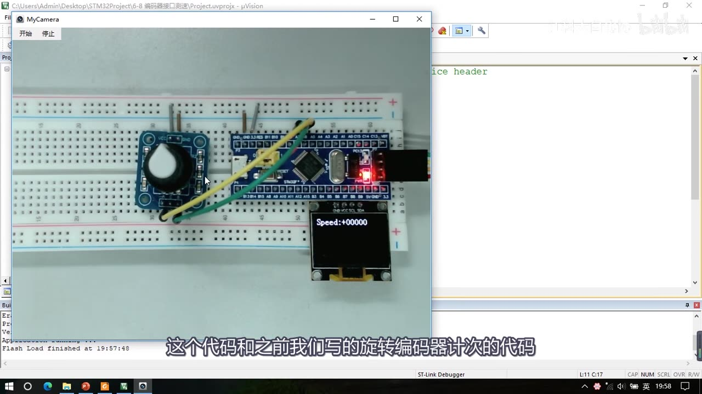
图 1：片头现象（成品工程）——Keil 标题栏 STM32Project\6-8 编码器接口测速；面包板上左边是旋转编码器模块、右边是 STM32 最小系统板，OLED 显示 Speed:+00000
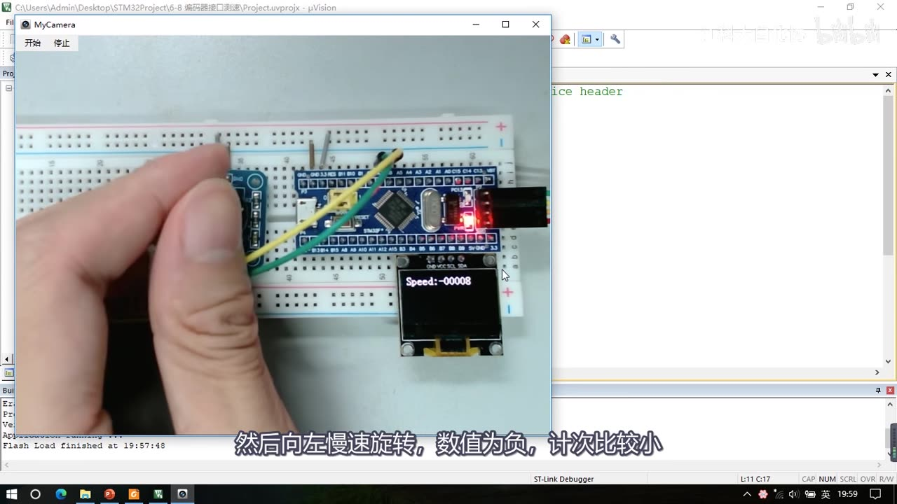
图 2：向左慢速旋转时 OLED 显示 Speed:-00008（数值为负、计次较小）；字幕「然后向左慢速旋转，数值为负，计次比较小」
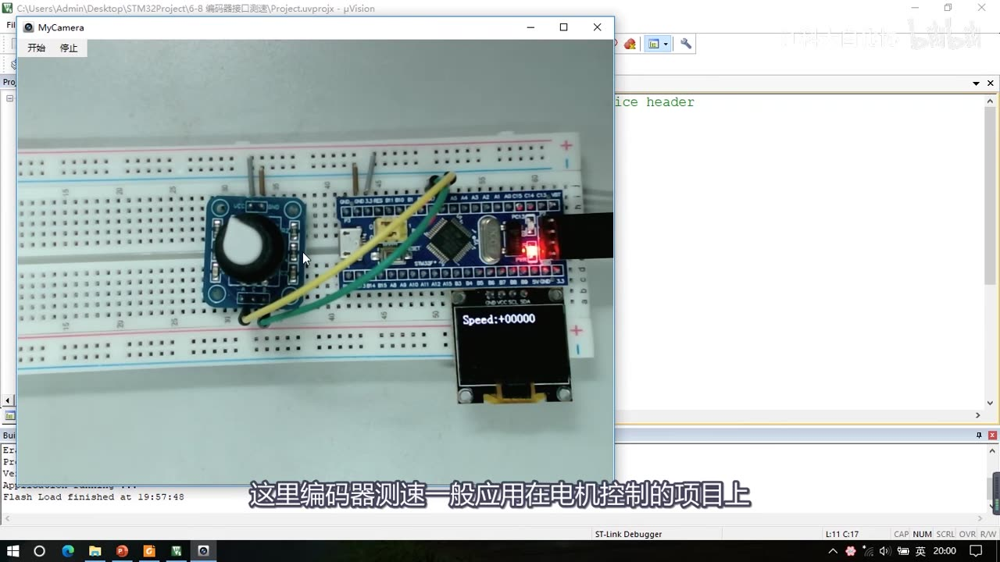
图 3：应用场景——编码器测速一般用在电机控制项目（PWM 驱动电机 + 编码器测速 + PID 闭环），OLED 停下时显示 Speed:+00000；字幕「这里编码器测速一般应用在电机控制的项目上」
- 为什么用硬件电路而不是外部中断（本集反复强调的动机）：如果用外部中断来计次，当电机高速旋转时，编码器每秒产生成千上万个脉冲，程序就得频繁进中断，而进中断之后完成的任务又只是简单的加一减一——软件资源就被这种简单而又低级的工作占用了。所以对于需要频繁执行、操作又比较简单的任务，一般都会设计一个硬件电路模块来自动完成；编码器接口就是用来自动给编码器计次的电路。每隔一段时间取一下计次值，就能得到编码器旋转的速度。
2. 编码器接口是什么
2.1 定义与能力
- Encoder Interface，编码器接口（英文认识一下就行）。
- 「编码器接口可接收增量（正交）编码器的信号，根据编码器旋转产生的正交信号脉冲，自动控制 CNT 自增或自减，从而指示编码器的位置、旋转方向和旋转速度。」
- 增量编码器 = 正交编码器，都是同一个意思：输出两个方波信号、相位相差 90°（超前 90° 或滞后 90° 分别代表正转和反转）。
- 每个高级定时器和通用定时器都拥有 1 个编码器接口；两个输入引脚借用了输入捕获的通道 1 和通道 2。
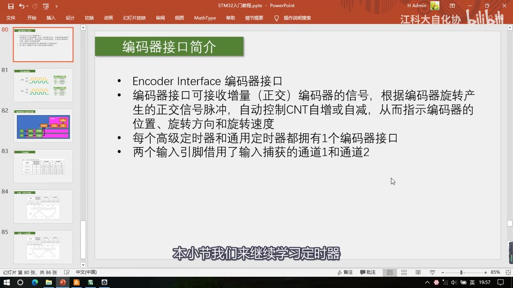
图 4：PPT「编码器接口简介」——Encoder Interface 编码器接口；可接收增量（正交）编码器信号，根据旋转产生的正交信号脉冲自动控制 CNT 自增或自减，从而指示编码器的位置、旋转方向和旋转速度；每个高级/通用定时器拥有 1 个编码器接口；两个输入引脚借用输入捕获的通道 1 和通道 2
2.2 工作流程：CNT = 位置，取一次清零 = 速度
- 编码器有 A 相、B 相两个输出，接入 STM32 定时器的编码器接口；编码器接口自动控制时基单元里的 CNT 计数器进行自增或自减。
- 举例：初始化后 CNT 初值为 0；编码器右转，CNT 就自增——右转产生一个脉冲，CNT 就加一次；右转产生 10 个脉冲后停下来，CNT 就由 0 自增到 10；再左转，CNT 就自减——左转产生 5 个脉冲，CNT 就在原来 10 的基础上自减 5、变成 5。
- 所以说：编码器接口其实就相当于一个带有方向控制的外部时钟，它同时控制着 CNT 的计数时钟和计数方向。这样 CNT 的值就表示了编码器的位置。
- 测速：「如果我们每隔一段时间取一次 CNT 的值，再把 CNT 清零，那每次取出来的值就表示了编码器的速度」。
- 借用 P17 测频法/测周法的知识点：编码器测速实际上就是测频法测「正交脉冲的频率」——CNT 计次、每隔一段时间取一次计次，就是测频法的思路；只不过编码器接口计次更高级，它能根据旋转方向，不仅能自增计次、还能自减计次，是一个带方向的测速。
2.3 资源与限制
- 每个高级定时器和通用定时器都只有 1 个编码器接口——资源比较紧张：如果一个定时器配置成了编码器接口模式，那它基本上就干不了其他活了。
- 本课程的 C8T6 芯片只有 TIM1、TIM2、TIM3、TIM4 四个定时器，所以最多只能接 4 个编码器；而且接完 4 个编码器，就没有定时器可以用了——所以如果编码器比较多，要考虑这个资源够不够用。
- 实在不行还可以用外部中断来接编码器——这样就是用软件资源来弥补硬件资源。硬件资源和软件资源是互补的：硬件资源越多、软件就越轻松；硬件不够，那就软件来凑。例如：
- PWM：可以不用硬件 PWM，改成定时中断，在中断里手动计数、手动翻转电平；
- 输入捕获：可以不用硬件捕获，改成外部中断，在中断里手动读取；
- 编码器：可以不用编码器接口，改成外部中断，在中断里手动增减。
- 编码器只能接 CH1 和 CH2（借用了输入捕获的前两个通道），CH3、CH4 不能接编码器。
- 高级定时器和通用定时器都有编码器接口，两者结构是一样的；基本定时器没有编码器接口（下面的框图会看到）。
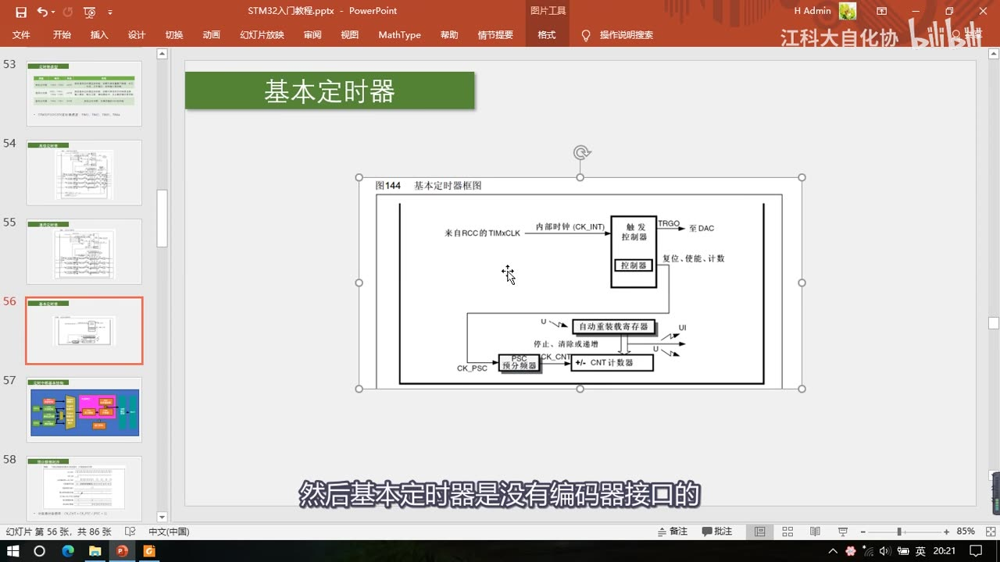
图 5：基本定时器框图（图144）——只有时基单元（PSC/CNT/ARR）、内部时钟 CK_INT 与触发控制器，没有编码器接口、也没有输入捕获/输出比较的通道；字幕「然后基本定时器是没有编码器接口的」
3. 旋转编码器与正交信号
3.1 旋转编码器是什么、有哪些类型
- 「旋转编码器：用来测量位置、速度或旋转方向的装置，当其旋转轴旋转时，其输出端可以输出与旋转速度和方向对应的方波信号，读取方波信号的频率和相位信息即可得知旋转轴的速度和方向。」
- 类型：机械触点式 / 霍尔传感器式 / 光栅式。
- 常见形态（画面配了实物图）：
- 光栅 + 红外对管：只有一相方波输出，不是正交编码器（只能测速、不能测方向）；
- 套件里的触点式旋转编码器：有 4 个引脚——上面两个是供电的正极和负极，下面两个是 A 相、B 相，是正交编码器；
- 电机后面自带的霍尔编码器：接线引脚一般有 6 个——2 根接电机、2 根接编码器电源、中间的 2 根是 A、B 相；
- 另外，一些独立的编码器（如光栅式）还有 Z 相：0 位置脉冲——编码器转到一个固定位置时输出一个脉冲，一般用于位置测量、校准 0 位置。
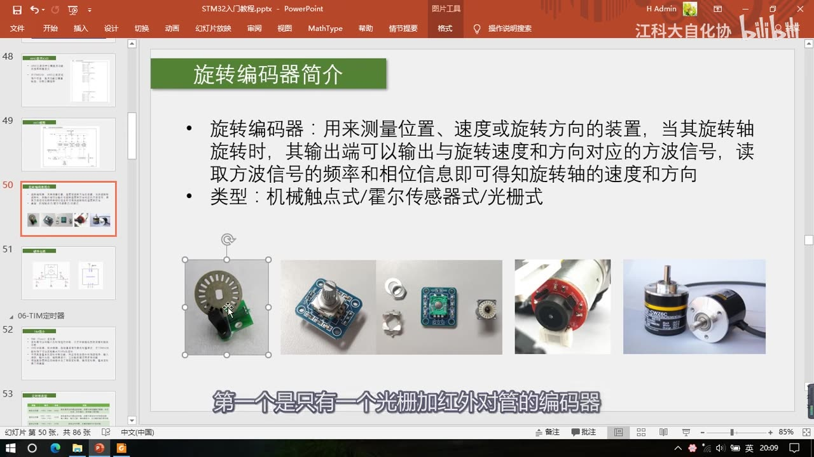
图 6：PPT「旋转编码器简介」——旋转编码器用来测量位置/速度/旋转方向，输出与速度和方向对应的方波信号，读取频率和相位即得速度与方向；类型有机械触点式/霍尔传感器式/光栅式；下方 5 张实物图（光栅+红外对管、触点式、电机自带霍尔编码器等）；字幕「第一个是只有一个光栅加红外对管的编码器」
3.2 只有一相为什么不行
- 编码器转起来时，A 相、B 相都会输出这样的方波信号；转得越快，方波的频率就越高——所以频率就代表了速度。
- 但如果只有一相（比如光栅+红外对管那种）：能测量速度，但是不能测量方向——因为正转和反转时，单相的波形是一模一样的（频率一样），看不出转向。
- 另一种思路：再加一根「方向脚」，让它在正转时输出高电平、反转时输出低电平，也能区分方向——但这不是正交信号。本节讲的是正交编码器。
3.3 正交方案的两个好处
- 正交方案：正转时 A 相提前 B 相 90°（A 超前 B）；反转时 A 相滞后 B 相 90°——「当然这个谁提前、谁滞后，是 A 相提前还是 B 相提前，只是极性定义的问题，把 A、B 相接法换一下，谁提前谁滞后就反过来了，功能上没区别」。
- 好处① 精度更高：只有一相时一个周期只能计一次数；正交信号 A、B 相都能计次，相当于计次频率提高了一倍——同样的转速能数到更多数，分辨率更高。
- 好处② 抗噪声：正交信号的两个信号必须交替跳变——正常旋转时 A、B 交替变化；如果一个信号不变、另一个信号连续跳变（比如某个传感器抖了一下连跳好几下），就不符合正交编码器的信号规律，此时计数会加减来回摆动、净计数不变，噪声就被抵消了。
3.4 正交编码器的两张真值表
按「边沿」和「另一相此刻的状态」列出正转/反转的四种情况（画面两张表）：
| 正转：边沿 | 另一相状态 | 反转：边沿 | 另一相状态 | |
|---|---|---|---|---|
| A相 ↑ | B相低电平 | A相 ↑ | B相高电平 | |
| A相 ↓ | B相高电平 | A相 ↓ | B相低电平 | |
| B相 ↑ | A相高电平 | B相 ↑ | A相低电平 | |
| B相 ↓ | A相低电平 | B相 ↓ | A相高电平 |
- 正转：
A↑ → B低、A↓ → B高、B↑ → A高、B↓ → A低； - 反转：四种组合正好相反（
A↑ → B高、A↓ → B低、B↑ → A低、B↓ → A高）。 - 由此得出编码器接口的设计逻辑：把 A、B 相的所有边沿都作为计数时钟，出现边沿时按「另一相此刻的高低电平」决定自增还是自减——这就是 STM32 定时器编码器接口的执行逻辑。
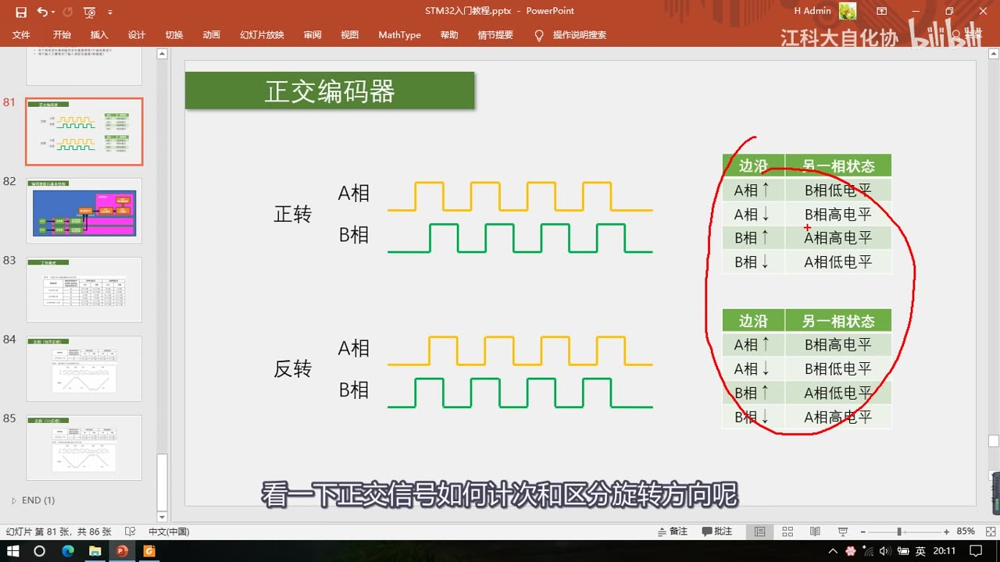
图 7：PPT「正交编码器」——上半是正转波形（A 相超前 B 相 90°）与真值表「A↑→B低、A↓→B高、B↑→A高、B↓→A低」，下半是反转波形（A 相滞后）与相反的真值表；红圈圈出两张表；字幕「看一下正交信号如何计次和区分旋转方向呢」
4. 编码器接口在定时器框图里的位置
4.1 输入部分：借输入捕获的 CH1/CH2
- 在通用定时器框图（图98）里，编码器接口处于中间偏上的位置；高级定时器和通用定时器的结构是一样的，每个定时器只有一个编码器接口；基本定时器没有。
- 编码器接口有两个输入端：分别接编码器的 A 相和 B 相——图里这两个输入端各有一个网络标号，分别是
TI1FP1和TI2FP2。 - 从图里能看出：编码器接口的两个引脚借用了输入捕获单元的前两个通道——所以最终的编码器输入脚就是定时器的 CH1 和 CH2 这两个引脚。
- 信号通路：CH1 经过输入滤波器和边沿检测 → TI1FP1 → 编码器接口；CH2 经同样电路 → TI2FP2 → 编码器接口；CH3 和 CH4 与编码器接口无关（后面还有一路输入捕获的数据选择器，那和编码器接口无关）。
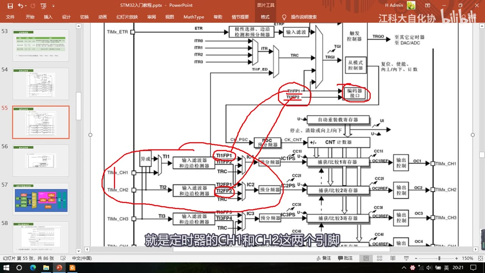
图 8：图98 通用定时器框图上标出编码器接口——红圈圈住右侧「编码器接口」方框，它的两个输入来自 TI1FP1 / TI2FP2；左边红圈圈出 TIMx_CH1 / TIMx_CH2 与它们的输入滤波器和边沿检测器；字幕「就是定时器的 CH1 和 CH2 这两个引脚」
4.2 输出部分：相当于「带方向的外部时钟」
- 编码器接口的输出部分其实就相当于从模式控制器，去控制 CNT 的计数时钟和计数方向：简单来说，就是按前面总结的那张表——正转的情况就控制 CNT 自增、反转的情况就控制 CNT 自减。
- 特别注意：我们之前一直在使用的 72MHz 内部时钟、以及时基单元初始化里设置的计数方向，在编码器模式下都不会被使用——计数器的自增和自减，受编码器控制。
- （但 ARR 仍然有效，见 4.4 的补码说明。）
4.3 编码器接口基本结构
- 输入捕获的前两个通道，通过 GPIO 口接入编码器的 A、B 相；
- 然后经过滤波器和边沿检测极性选择，产生 TI1FP1 和 TI2FP2，通向编码器接口；
- 编码器接口通过预分频器控制 CNT 计数器的时钟，同时根据编码器的旋转方向控制 CNT 的计数方向：编码器正转时 CNT 自增，编码器反转时 CNT 自减。
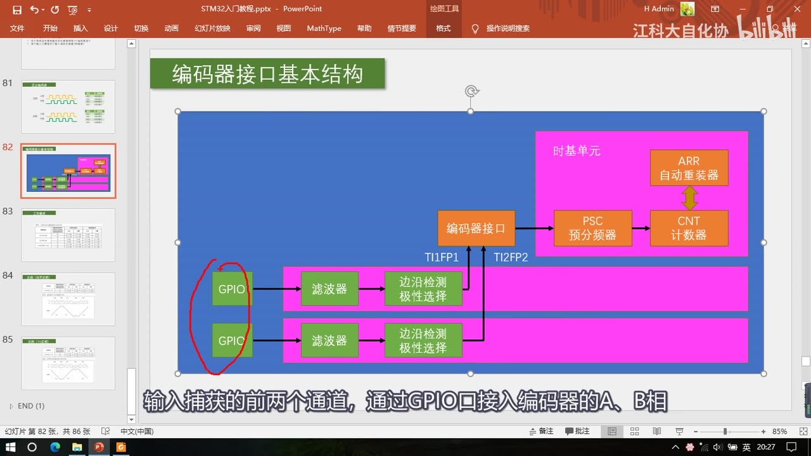
图 9：PPT「编码器接口基本结构」——右上时基单元（PSC 预分频器 / CNT 计数器 / ARR 自动重装器）；中间偏左是「编码器接口」方框；下方两路 GPIO → 滤波器 → 边沿检测极性选择 → TI1FP1 / TI2FP2 → 编码器接口；字幕「输入捕获的前两个通道，通过 GPIO 口接入编码器的 A、B 相」
4.4 ARR 与补码：怎么得到负数
- ARR 也是有效的，一般会把 ARR 设成 65535（最大量程），这样可以利用补码的特性很容易得到负数。
- 例如 CNT 初始为 0：正转时 CNT 自增 0、1、2、3、4……这都没问题；反转时 CNT 自减——0 的下一个数就是 65535，接着是 65534、65533……
- 「这里负数不应该是 -1、-2 吗？65535 是不是就出问题了？」——没关系：程序里直接把这个 16 位的无符号数转换为 16 位的有符号数，根据补码的定义，65535 就对应 -1、65534 对应 -2、65533 对应 -3……这样就可以直接得到负数，非常方便。这就是读出数据、得到负数的一个小技巧。
- 注意：本集只讲了这个思路，没有给具体 C 代码（怎么转换、在哪里转换，代码在 P20）。
5. 三种工作模式与表77
5.1 表77：计数方向与编码器信号的关系
画面给出表77「计数方向与编码器信号的关系」（完整 6 行，逐行抄录）：
| 有效边沿 | 相对信号的电平（TI1FP1 对应 TI2，TI2FP2 对应 TI1） | TI1FP1 信号：上升 | TI1FP1 信号：下降 | TI2FP2 信号：上升 | TI2FP2 信号：下降 |
|---|---|---|---|---|---|
| 仅在 TI1 计数 | 高 | 向下计数 | 向上计数 | 不计数 | 不计数 |
| 仅在 TI1 计数 | 低 | 向上计数 | 向下计数 | 不计数 | 不计数 |
| 仅在 TI2 计数 | 高 | 不计数 | 不计数 | 向上计数 | 向下计数 |
| 仅在 TI2 计数 | 低 | 不计数 | 不计数 | 向下计数 | 向上计数 |
| 在 TI1 和 TI2 上计数 | 高 | 向下计数 | 向上计数 | 向上计数 | 向下计数 |
| 在 TI1 和 TI2 上计数 | 低 | 向上计数 | 向下计数 | 向下计数 | 向上计数 |
- 表的含义：TI1FP1 和 TI2FP2 接的就是编码器的 A、B 相；在 A 相和 B 相的上升沿或下降沿触发计数，到底向上还是向下计数，取决于边沿信号发生的这个时刻、另一相的电平状态（也就是表里「相对信号的电平」那一列——TI1FP1 对应 TI2、TI2FP2 对应 TI1，就是「另一相电平」的意思）。
- 三组行分别对应三种工作模式：仅在 TI1 计数、仅在 TI2 计数、在 TI1 和 TI2 上计数。
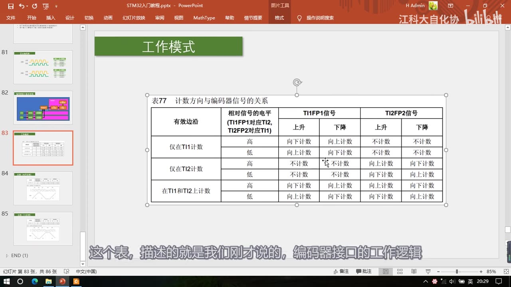
图 10：表77「计数方向与编码器信号的关系」完整 6 行——三组（仅在 TI1 计数 / 仅在 TI2 计数 / 在 TI1 和 TI2 上计数）×「相对信号的电平 高/低」，右侧 4 列是 TI1FP1 上升/下降、TI2FP2 上升/下降 对应的「向上计数 / 向下计数 / 不计数」；字幕「这个表，描述的就是我们刚才说的，编码器接口的工作逻辑」
5.2 三种模式分别是什么意思
- 前面总结的正转 4 种状态（
A↑→B低、A↓→B高、B↑→A高、B↓→A低）涉及两个引脚：A 相上升沿、A 相下降沿、B 相上升沿、B 相下降沿。 - 如果这 4 种状态都执行自增或自减，就是 A 相和 B 相的边沿都计数 → 对应第 3 种模式 「在 TI1 和 TI2 上计数」。
- 也可以忽略一些边沿：仅在 A 相的上升沿和下降沿计数、B 相的两个状态忽略（对应「仅在 TI1 计数」）；或者仅在 B 相的上升沿和下降沿计数、A 相的边沿不管（对应「仅在 TI2 计数」）——这样也能实现功能，只是计次的精度低了一些。
- 用图比划：两个边沿都计数时，计数的时刻是每一个边沿（A↑、A↓、B↑、B↓ 都计）；仅在 A 相边沿计数时，只取 A 相的上升沿和下降沿时刻、B 相的边沿被忽略；仅在 B 相边沿计数同理。
5.3 结论：正转都向上、反转都向下，一般用双沿
- 把左边的正转真值表和右边的表77 对照（假设 TI1 接 A 相、TI2 接 B 相）：
- 左表第一个状态「A 相上升沿，B 相低电平」→ 右表「在 TI1 和 TI2 上计数」行、A 相上升沿、另一相低电平 → 向上计数；
- 第二个状态「A 相下降沿，B 相高电平」→ 向上计数；
- 第三个状态「B 相上升沿，A 相高电平」→ 向上计数；
- 第四个状态「B 相下降沿，A 相低电平」→ 还是向上计数。
- 反转的四个状态拿来对比，就对应另外四种「向下计数」。
- 总结一句话：正转的状态都向上计数，反转的状态都向下计数——这就是编码器接口的执行逻辑。
- 一般都用第 3 种模式（TI1 和 TI2 上计数、两个边沿都计数），因为这个模式计数精度最高（计次频率提高了一倍）；另外两种「仅在一个边沿计数」的模式只在一相边沿计数、精度低一些。
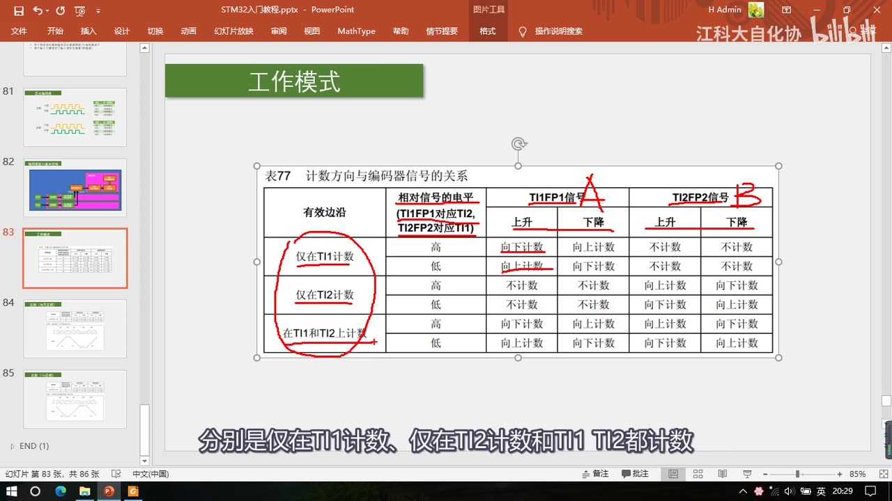
图 11：同一张表77 上的红笔标注——红圈圈出左侧三种模式的分组（仅在 TI1 计数 / 仅在 TI2 计数 / 在 TI1 和 TI2 上计数），表头右侧标出 A（TI1FP1 信号）和 B（TI2FP2 信号）；字幕「分别是仅在 TI1 计数、仅在 TI2 计数和 TI1 TI2 都计数」
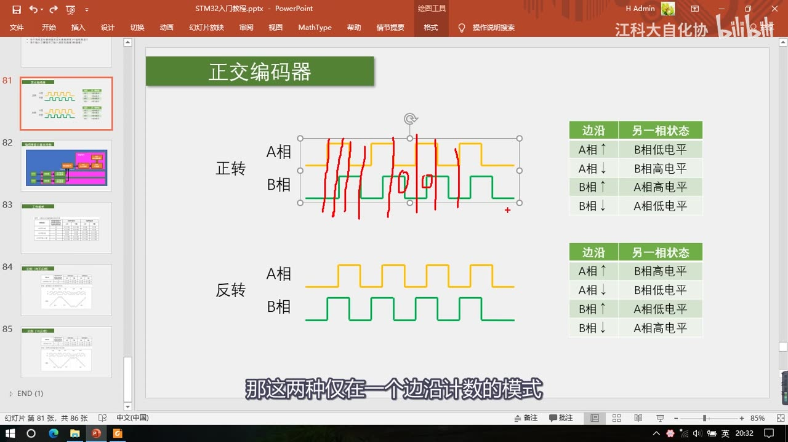
图 12：「正交编码器」页上红竖线标出的「双沿计数时刻」——每个 A↑、A↓、B↑、B↓ 都画了一条竖线，对应第 3 种模式（两个边沿都计数）的计数时刻；字幕「那这两种仅在一个边沿计数的模式」
6. 两个实例
6.1 实例一：均不反相——抗噪声原理
- 实例「均不反相」，用的是在 TI1 和 TI2 上计数（双沿计数）模式；图 132「编码器模式下的计数器操作实例」画了 TI1、TI2 两路波形和计数器值的变化：
- 向前（正转）：计数器阶梯式上升；
- 遇到毛刺：波形上出现一相不动、另一相连续跳变的情况（不符合正交规律），此时计数器会来回加/减摆动；
- 毛刺过后：最终计数值还是原来那个数，并不受到噪声的影响——这就是正交编码器抗噪声的原理；
- 之后向后（反转）：计数器阶梯式下降；再来一次毛刺、又恢复向前上升。
- 也就是说：正交信号必须交替跳变，合法跳变才计一个数；不合法的毛刺跳变只是让计数器来回摆动、净计数为 0，所以能抗住这种噪声。
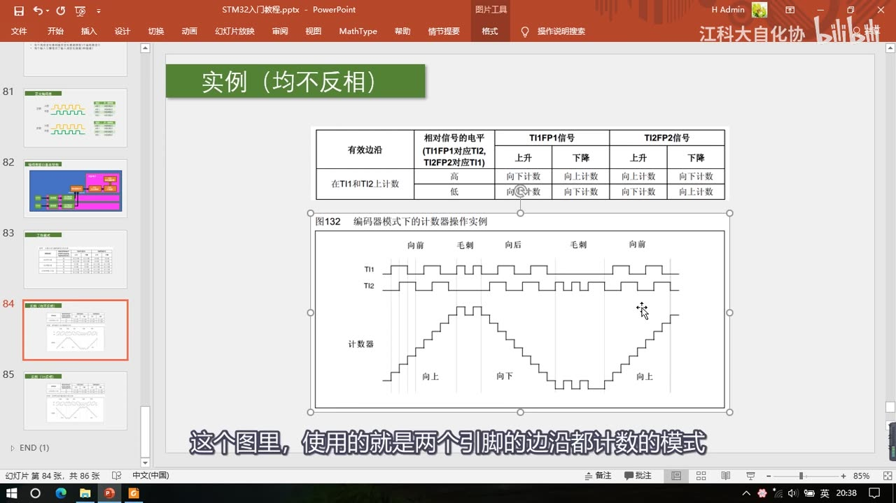
图 13：PPT「实例（均不反相）」——上表是表77 的后两行（在 TI1 和 TI2 上计数）；图132「编码器模式下的计数器操作实例」：TI1/TI2 时序图下方「计数器」呈阶梯上升/下降，标注「向前 / 毛刺 / 向后 / 毛刺 / 向前」，毛刺处计数来回摆动但净计数不变；字幕「这个图里，使用的就是两个引脚的边沿都计数的模式」
6.2 实例二：TI1 反相——极性与方向
- 另一个实例是 TI1 反相的图（图 133），展示的是极性变化对计数的影响。
- 关键区别：在输入捕获模式下，极性选择指的是「上升沿/下降沿」的边沿极性；而在编码器接口模式下，极性不再是边沿极性的概念，而是「高低电平反相」——这里有两个极性控制参数：一档是「直通、不反相」，另一档是「过一个非门、反相」——把输入的高、低电平整体反过来（具体参数名在 P20 的代码里才会出现）。
- 可以这样理解：均不反相时，如果查表得到的计数方向是向上，那TI1 反相之后，查表得到的计数方向就反了（同样的旋转，计数器方向与均不反相相反）。
- 用途：如果实际接线后发现**「加减方向反了」（正转时 CNT 在减、反转时在加），就可以把任一个引脚反相来纠正；或者直接交换 A、B 两相的接线**、或者换一个引脚（延伸结论，视频原话是「有很多地方都可以调整极性」），都能改变方向。
7. 手册导读与下一集
- 本集内容在手册里对应**「编码器接口模式」**这一节。
- 手册里有一句总结性的话：「编码器接口模式基本上相当于使用了一个带有方向选择的外部时钟」。
- 手册页上列出的配置清单（画面，25:48；本集只给手册清单，具体代码在 P20）：
| 寄存器位（出自手册画面） | 取值 | 含义 |
|---|---|---|
CC1S（TIMx_CCMR1） |
'01' |
IC1FP1 映射到 TI1 |
CC2S（TIMx_CCMR2） |
'01' |
IC2FP2 映射到 TI2 |
CC1P（TIMx_CCER） |
'0' |
IC1FP1 不反相，IC1FP1 = TI1 |
CC2P（TIMx_CCER） |
'0' |
IC2FP2 不反相，IC2FP2 = TI2 |
SMS（TIMx_SMCR） |
'011' |
所有输入均在上升沿和下降沿有效 |
- 手册里还有表77、两个实例（抗噪声原理、极性选择的作用）以及一些说明文字，可以自行查看。
- 结尾（25:52）：「那本小节的内容就到这里，我们下一小节来写编码器接口的代码。」——代码在 P20 [6-8]。
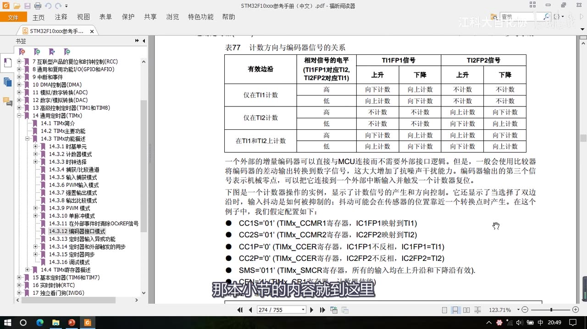
图 14：参考手册「编码器接口模式」页——上方是表77，下方是配置清单：CC1S='01'（TIMx_CCMR1，IC1FP1 映射到 TI1）、CC2S='01'（TIMx_CCMR2，IC2FP2 映射到 TI2）、CC1P='0'（TIMx_CCER，IC1FP1 不反相）、CC2P='0'（TIMx_CCER，IC2FP2 不反相）、SMS='011'（TIMx_SMCR，所有输入均在上升沿和下降沿有效）；字幕「那本小节的内容就到这里」
坑与易错点
- 编码器接口只能借 CH1/CH2：它用的是输入捕获的前两个通道，CH3/CH4 不能接编码器——引脚具体是哪个，由所选定时器的 CH1/CH2 决定（查引脚定义表）。
- 基本定时器没有编码器接口：只有高级定时器和通用定时器有，且每个定时器只有 1 个。
- 一个定时器配成编码器模式后基本干不了别的活：C8T6 只有 TIM1～TIM4，最多接 4 个编码器；接满后没定时器可用，只能退回外部中断软件计次（硬件不够软件凑）。
- 编码器模式下 72MHz 内部时钟不再使用：CNT 的计数时钟由「编码器边沿」提供；时基单元里设置的计数方向也不再使用（方向由编码器决定）。
- 但 ARR 仍然有效：一般设 65535（最大量程），配合补码把 16 位无符号数当 16 位有符号数，才能得到 -1、-2 这样的负数。
- CNT 的值是「位置」不是「速度」：要测速度必须每隔一段时间取一次 CNT、再把 CNT 清零——取到的值才是这段时间的速度（本质是带方向的测频法）。
- 只有单相不能测方向：单相方波正转反转一模一样；加方向脚虽然能区分方向，但那不是正交信号。
- 「谁超前」只是极性定义：正转 A 超前 B、还是 B 超前 A，取决于你怎么定义方向和怎么接 A/B 相——换接法就反过来，功能不变。
- 正交的两个好处别只记一个：①精度更高（A、B 相都计次，计次频率提高了一倍）②抗噪声（两信号必须交替跳变，毛刺只让计数来回摆动）。
- 三种模式里一般只用「在 TI1 和 TI2 上计数」：两个边沿都计数，精度最高；另外两种「仅在一个边沿计数」的模式能工作但精度低。
- 编码器模式下的「极性」不是边沿极性：输入捕获里极性是选上升沿/下降沿，而编码器接口里极性是「高低电平反相」（不反相 / 过非门反相）——别拿输入捕获的理解套上去。
- 加减方向反了怎么办：①把任一个引脚反相；②交换 A/B 两相接线；③换引脚（延伸）——都能纠正方向。
- 本集没有库函数、没有配置代码：具体怎么配寄存器/调库函数、怎么读计数器、怎么把无符号转有符号，都在 P20 [6-8]；本集只给了手册配置清单（图 14）。
- 编码器接口不负责「测速的采样时间」：取 CNT 的间隔、脉冲当量（一圈多少个脉冲）、误差与分辨率，本集都没有讲（留到 P20 及实际项目）。
- Z 相不是每个编码器都有：光栅/独立编码器才可能有 Z 相（0 位置脉冲），套件里的触点式旋钮编码器只有 A/B 两相。
时间轴
| 时间 | 内容 |
|---|---|
| 0:02 | 开场：本小节继续学习定时器，这是最后一部分——编码器接口 |
| 0:10 | 先看最终程序的现象：本小节只有一个程序，就是编码器接口测速 |
| 0:22 | 面包板上接了一个旋转编码器模块；这个代码和之前写的「旋转编码器计次」功能基本一样 |
| 0:32 | 本质上也是编码器计次，只不过本代码靠定时器的编码器接口自动计次 |
| 0:40 | 之前的代码是触发外部中断、在中断函数里手动计次 |
| 0:46 | 用编码器接口的好处是节约软件资源：外部中断计次时，电机高速旋转每秒成千上万脉冲，程序频繁进中断 |
| 1:06 | 进中断后做的只是简单加一减一，软件资源被低级工作占用了 |
| 1:10 | 所以「需要频繁执行、操作又比较简单」的任务，一般设计硬件电路模块自动完成 |
| 1:14 | 编码器接口就是用来自动给编码器计次的电路；每隔一段时间取一下计次值就得到速度 |
| 1:24 | 看程序：OLED 显示 Speed |
| 1:31 | 向右慢速旋转数值为正、计次较小；向右快速旋转计次增大 |
| 1:42 | 向左慢速旋转数值为负、计次较小；向左快速旋转计次负向增大 |
| 1:55 | 停下来速度就是 0；配合编码器可测旋转速度与方向 |
| 2:06 | 应用：电机控制——PWM 驱动电机 + 编码器测速 + PID 闭环 |
| 2:20 | 实际电机用霍尔/光栅测速；本实验用触点式旋钮编码器、人工旋转模拟 |
| 2:40 | 程序看完，回 PPT 看编码器接口的简介 |
| 2:46 | 英文 Encoder Interface，直译编码器接口 |
| 2:55 | 工作流程概述：可接收增量（正交）编码器信号，根据正交脉冲自动控制 CNT 自增或自减 |
| 3:17 | 正交编码器：输出两个相位差 90° 的方波，超前/滞后分别代表正转/反转 |
| 3:37 | 编码器 A/B 两相接入，编码器接口自动控制时基单元 CNT 自增或自减 |
| 4:00 | 举例：CNT 初值 0，右转 10 个脉冲 → CNT 到 10 |
| 4:20 | 再左转产生 5 个脉冲 → CNT 在 10 的基础上自减 5 |
| 4:38 | 编码器接口相当于一个带方向控制的外部时钟，同时控制计数时钟和计数方向 |
| 4:46 | 所以 CNT 的值表示位置；每隔一段时间取一次 CNT 再清零，取出的值表示速度 |
| 4:54 | 借用测频法/测周法：编码器测速就是测频法测正交脉冲频率，只是加了方向 |
| 5:21 | 资源：每个高级/通用定时器拥有 1 个编码器接口 |
| 5:30 | 配成编码器模式后基本干不了别的活；C8T6 只有 TIM1～TIM4，最多接 4 个编码器 |
| 5:44 | 接满就没定时器用了；实在不行用外部中断软件计次弥补 |
| 6:00 | 硬件资源与软件资源互补：硬件越多软件越轻松，硬件不够软件来凑（PWM/输入捕获/编码器都有对应例子） |
| 6:47 | 两个输入引脚借用输入捕获的通道 1 和通道 2 |
| 7:08 | 旋转编码器简介：测量位置、速度或旋转方向的装置 |
| 7:26 | 类型：机械触点式 / 霍尔传感器式 / 光栅式 |
| 7:40 | 常见形态：光栅+红外对管只有一相，不是正交编码器 |
| 7:48 | 套件里的触点式编码器有 4 个引脚：上面电源正负极、下面 A/B 两相，是正交编码器 |
| 8:07 | 电机自带的霍尔编码器有 6 根线：2 根电机、2 根电源、中间 2 根 A/B 相 |
| 8:33 | 独立编码器还有 Z 相（0 位置脉冲），用于位置测量、校准 0 位置 |
| 9:10 | 转动时 A/B 输出方波，转得越快频率越高，频率代表速度 |
| 9:20 | 只有一相能测速但不能测方向；加方向脚可行但不是正交信号 |
| 9:31 | 正交方案：正转 A 超前 B 90°、反转 A 滞后 B 90°（谁超前是极性定义） |
| 9:56 | 好处①精度更高：A、B 相都计次，计次频率提高了一倍 |
| 10:18 | 好处②抗噪声：两信号必须交替跳变，一相不动另一相连跳就抵消 |
| 10:29 | 正转真值表：A↑→B低、A↓→B高、B↑→A高、B↓→A低 |
| 11:20 | 反转真值表四种状态正好相反 |
| 11:46 | 设计逻辑：把 A/B 所有边沿作为计数时钟，按另一相此刻电平决定自增/自减 |
| 12:37 | 看框图：编码器接口处于定时器这个位置，高级/通用一样、每定时器一个 |
| 12:54 | 基本定时器没有编码器接口 |
| 13:00 | 编码器接口有两个输入端，分别接编码器 A/B 相；网络标号 TI1FP1、TI2FP2 |
| 13:22 | 借用输入捕获的前两个通道，所以输入脚就是 CH1 和 CH2；CH3/CH4 无关 |
| 14:00 | 输出部分相当于从模式控制器，控制 CNT 的计数时钟和计数方向 |
| 14:15 | 按前面总结的表：正转控制 CNT 自增，反转控制 CNT 自减 |
| 14:24 | 注意：72MHz 内部时钟和时基单元里设置的计数方向不再使用 |
| 14:46 | 编码器接口基本结构：GPIO→滤波→边沿检测极性选择→TI1FP1/TI2FP2→编码器接口 |
| 15:05 | 编码器接口通过预分频器控制 CNT 时钟，同时根据方向控制计数方向；正转增反转减 |
| 15:23 | ARR 也有效，一般设 65535 最大量程，利用补码得到负数 |
| 15:40 | 正转 CNT 0、1、2、3…；反转 0 的下一个数是 65535，再 65534、65533 |
| 16:00 | 把 16 位无符号数转换成 16 位有符号数：65535 对应 -1、65534 对应 -2 |
| 16:20 | 这个技巧很方便得到负数；电路结构了解得差不多 |
| 16:24 | 看工作模式表77：描述编码器接口的工作逻辑 |
| 16:38 | TI1FP1/TI2FP2 接 A/B 相，在 A/B 的上升沿或下降沿触发计数 |
| 16:52 | 向上还是向下计数，取决于边沿出现时另一相的电平状态（相对信号电平） |
| 17:06 | 编码器还分了 3 种工作模式：仅在 TI1 计数、仅在 TI2 计数、TI1 TI2 都计数 |
| 17:30 | 4 种正转状态涉及两个引脚：A 相上升/下降沿、B 相上升/下降沿 |
| 17:45 | 4 种状态都计数就是第 3 种模式（TI1 和 TI2 都计数） |
| 17:53 | 也可以忽略部分边沿：仅在 A 相边沿计数（仅 TI1）或仅在 B 相边沿计数（仅 TI2） |
| 18:06 | 只用一相边沿也能实现功能，只是计次精度低一些 |
| 18:18 | 双沿计数时每个边沿都是计数时刻；单相计数时忽略另一相边沿 |
| 18:28 | 用左表与右表对照：正转四种状态都对应向上计数 |
| 19:20 | 反转四种状态则对应向下计数 |
| 19:44 | 总结：正转状态都向上计数、反转状态都向下计数 |
| 19:58 | 另两种模式只在一相边沿计数，精度低一些 |
| 20:05 | 一般都用第 3 种模式（两个边沿都计数），因为计次精度最高 |
| 20:14 | 实例一（均不反相）：图132 用双沿计数模式，画 TI1/TI2 与计数器变化 |
| 20:38 | 向前时计数器阶梯上升；遇到毛刺（一相不动另一相连跳）时加减摆动 |
| 20:52 | 毛刺过后计数值还是原来的，不受噪声影响——这就是抗噪声原理 |
| 22:10 | 之后向后计数器下降，再来毛刺、再向前 |
| 22:35 | 实例二（TI1 反相）：展示极性变化对计数的影响 |
| 23:00 | 输入捕获模式下极性是边沿极性；编码器模式下极性是高低电平反相 |
| 23:30 | 选上升沿参数=不反相、下降沿参数=过非门反相 |
| 24:00 | TI1 反相后，同样的旋转查表得到的计数方向与均不反相相反 |
| 24:35 | 用途：加减方向反了时，把任一引脚反相，或交换 A/B 相、换引脚 |
| 25:05 | 本集内容对应手册的「编码器接口模式」一节 |
| 25:20 | 手册原话：编码器接口模式基本上相当于使用了一个带有方向选择的外部时钟 |
| 25:30 | 手册还有表77、两个实例的说明，可以自行查看 |
| 25:50 | 结尾：本小节内容到这儿，下一小节来写编码器接口的代码 |
存疑
- 本集文本来自画面硬字幕的 OCR（PP-OCRv4，source=subtitle-ocr，476 段），不是 ASR。讲手册那几段混入了大片手册正文（如「一个外部的增量编码器可以直接与 MCU 连接而不需要外部接口逻辑」「273/754」页码等），这些不是口述内容；另有行首噪声（
T4、厂、门等）。典型 OCR 错字（本集实际出现）：编码器接口→ 「编码器接回/编码器接国/编码器接」、CNT→ 「CN」、TI1FP1→ 「T1FP1/T11」、引脚→ 「引I脚」、这个→ 「这介」、Encoder Interface→ 「Encoderlnterface」等，已按画面和上下文校正。 - 本集完全没有讲库函数：全文没有出现编码器接口相关的库函数名与参数（素材核对为 0 次），所以本笔记一个函数名都没写，配置与代码统一写「在 P20 [6-8]」；本集能给的只有手册配置清单（图 14，出自手册画面）。
- 本集没有「倍频」这个词：老师只说「A、B 相都计次，相当于计次频率提高了一倍」（10:04）；更细的倍数说法属常识推算，本集未出现，本笔记也未使用。
- 寄存器位
CC1S / CC2S / CC1P / CC2P / SMS只出现在最后的手册画面（f_00259，25:48），老师没有逐条口述；本笔记 7 章的清单表已注明「出自手册画面」，不是本节口述结论。 - ARR 设 65535 与「补码转负数」讲得比较口语：「我们会做一个操作……直接转成有符号数」，没有给具体 C 代码（比如怎么写强制类型转换、在哪里转），写法留到 P20。
- 「测速」的采样时间/误差没讲：只说「每隔一段时间取一次 CNT 再清零」，没有给采样周期、脉冲当量（一圈多少脉冲）、分辨率与误差公式，这些要等 P20 或实际项目。
- 片头工程名与视频小节号不同套：片头工程是
6-8 编码器接口测速（P20 的代码），本集标题是 [6-7]——与 P15～P18 一样，素材按「代码小节」编号。 - 现象只有 OLED 数值、没有示波器/波形测量：
Speed:+00000、Speed:-00008都是画面瞬时值，正转/反转/快慢的对应关系靠口述描述。 - 手册导读较仓促：25:05–25:52 只说了「对应编码器接口模式一节 + 表77 + 两个实例 + 配置清单」，没有逐条讲；手册页还有滚动/遮挡（OCR 混入页码等文本）。